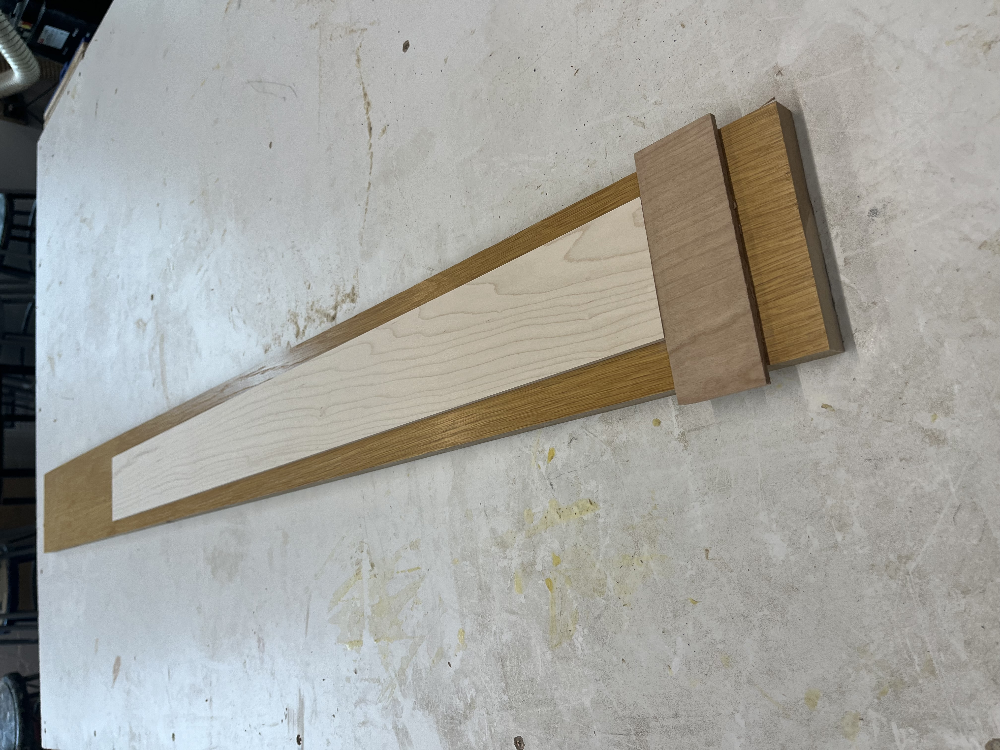
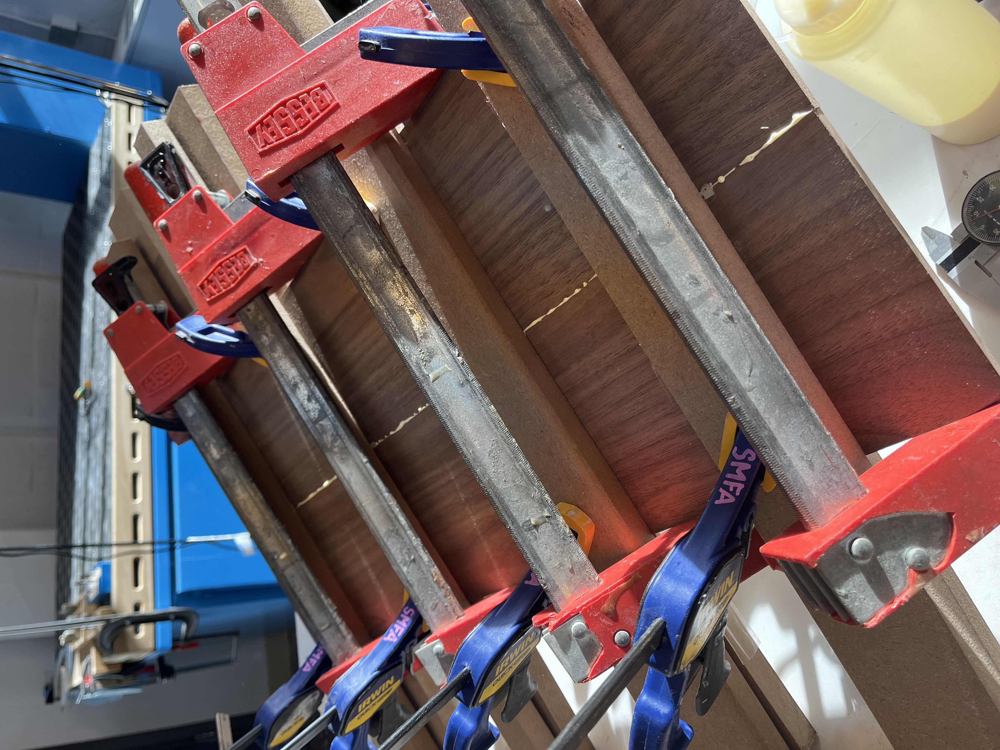

Making Veneers
Resawing Raw Material
The raw material I purchased was in the form of 1x4 maple and 1x6 walnut, which meant I had to re-saw and plane it down to the thickness I needed.
I used the bandsaw to re-saw my boards into three strips each.
I made a makeshift planer sled (shown right) to get rid of the rough edge and bring it to final thickness. The small cleat on the end is cut at a 45 degree angle to keep the thin boards from lifting up.

Maple strip on planer sled
Bookmatched Halves
I glued up the top and back panels, making sure to “bookmatch” them. This means they have a symmetrical grain pattern for both aesthetics and more consistent acoustic properties.

Back panel glue-up

Finished veneers